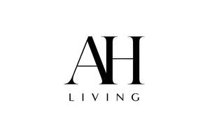
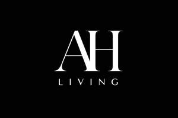

Trade Mark Journal No.2026/006 6 February 2026
UK00004327951 21 January 2026 (20,21)
Mark 1

Mark 2

- Class 20
- Shelves; Furniture shelves; Benches with shelves; Shelves for storage; Shelving; Racks [furniture]; Racks; Storage racks; Furniture racks; Coat racks; Shoe racks; Food racks; Clothes racks [furniture]; Furniture; Cushions [furniture]; Wooden furniture; Patio furniture; Kitchen furniture; Bedroom furniture; Nursery furniture; Outdoor furniture; Benches [furniture]; Household furniture; Bathroom furniture; Storage furniture; Shoe cabinets; Shoe organisers; Clothes rails; Garment rails; Living room furniture; Bathroom stools; Containers made of wood [other than for household or kitchen use]; Storage units [furniture]; Storage baskets [furniture]; Storage boxes [furniture]; Beds, bedding, mattresses, pillows and cushions; Pillows; Stuffed pillows; Maternity pillows; Neck pillows; Cushions; Memory foam pillows; Clothes hangers, clothes stands [furniture] and clothes hooks; Clothes covers; Clothes organisers; Covers for clothing [wardrobe]; Closet organisers [parts of furniture]; Hangers for clothes; Clothes hangers; Coat racks [furniture]; Furniture for house, office and garden; Garden furniture; Modular bathroom furniture; Lounge furniture; U-shaped pillows.
- Class 21
- Kitchen utensils; Household or kitchen utensils; Kitchen containers; Kitchen utensils of silicon; Household or kitchen containers; Containers for household or kitchen use; Toilet and bathroom cleaning utensils ; Kitchen boards for chopping; Cooking utensils; Chopping boards for kitchen use; Food storage containers; Clothes airers [clothes horse]; Clothes pegs [clothes pins]; Clothes drying hangers; Clothes horses; Clothes drying racks; Racks for drying clothes; Clothes racks, for drying; Drying racks for clothes; Racks for airing clothes; Cosmetic and toilet utensils; Toilet brushes; Bath brushes; Chopping boards; Wooden chopping blocks [utensils]; Wooden chopping boards for kitchen use; Kitchen cutting boards; Cutting boards for the kitchen; Cutting boards; Mixing spoons [kitchen utensils]; Household utensils; Dishes [household utensils]; Cosmetic utensils; Utensils for household purposes; Household utensils for cleaning, brushes and brush-making materials; Water bottles; Brushes for cleaning; Cloths for cleaning.
Infinity Supply Ltd